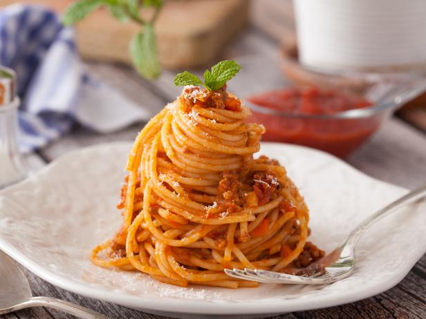

Spaghetti with tomato sauce

Description
Indulge in a classic Italian delight with our spaghetti recipe!
Ingredients
- 12 ounces dried spaghetti
- 4 quarts water
- 1 tablespoon salt
- tomato sauce
Steps
- In a 6-quart pot, bring 4 to 6 quarts water and 1 to 1 1/2 tablespoons salt to a boil.
- Add 12-ounces dry spaghetti to the pot, stir to separate noodles and prevent sticking and bring water back to a boil.
- Cook spaghetti uncovered according to package directions; start checking for doneness 2 minutes before the suggested al dente time.
- Drain spaghetti, reserving up to 1 cup of cooking water to add to sauce.
- Add the cooked spaghetti to the sauce with a splash of the cooking water and stir to coat, thinning it out with more cooking water as necessary.
Disclosure: This recipe is not my own and was used solely for demonstration.